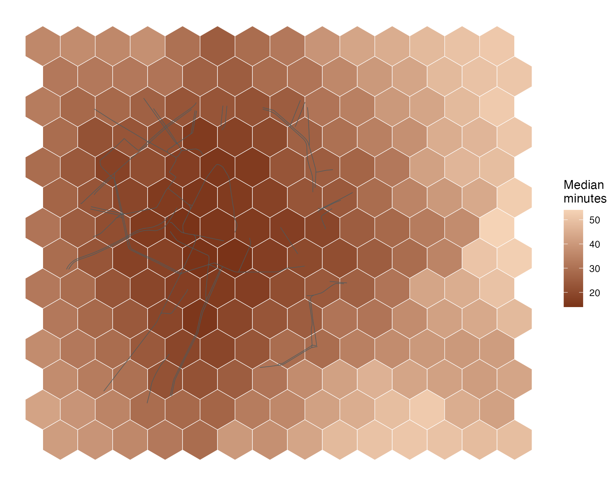
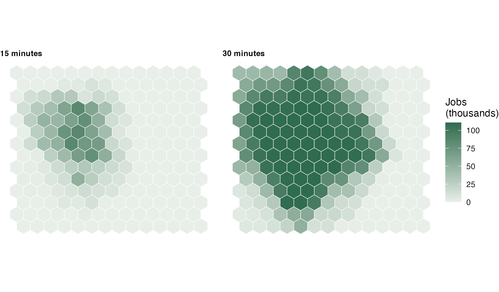
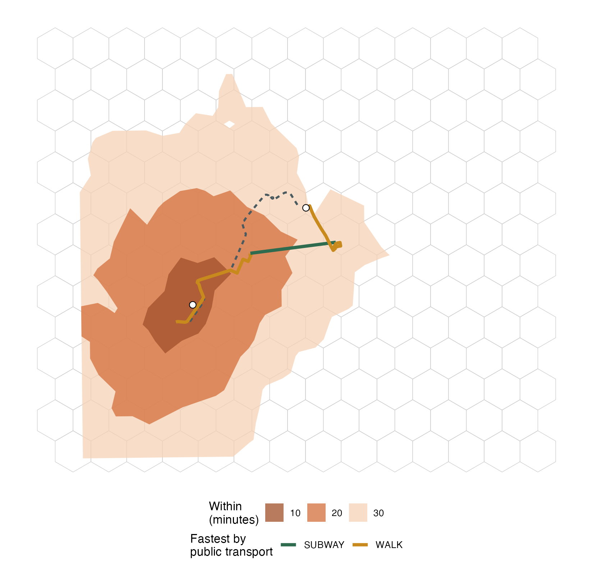

peabiru returns tibbles, and sf tibbles where the result
has a geometry, so its results go straight into ‘dplyr’ and ‘ggplot2’.
This article walks from a set of points to maps of travel times,
accessibility, isochrones and trips, on the São Paulo sample network
shipped with the package (the streets around Avenida Paulista and the
SPTrans GTFS feed), so that it runs offline in a few seconds.
library(peabiru)
library(sf)
library(dplyr)
library(ggplot2)
data_path <- system.file("extdata/spo", package = "peabiru")
network <- build_network(data_path, n_threads = 2)
departure <- as.POSIXct("2019-05-13 14:00:00", tz = "America/Sao_Paulo")Points and a grid as sf
The sample has 27 points with their population and the jobs, schools
and health care in each. As an sf tibble they keep those
columns next to the geometry:
points <- read.csv(file.path(data_path, "spo_points.csv")) |>
as_tibble() |>
st_as_sf(coords = c("lon", "lat"), crs = 4326)
points
#> Simple feature collection with 27 features and 5 fields
#> Geometry type: POINT
#> Dimension: XY
#> Bounding box: xmin: -46.64119 ymin: -23.5577 xmax: -46.6286 ymax: -23.54209
#> Geodetic CRS: WGS 84
#> # A tibble: 27 × 6
#> id population schools jobs healthcare geometry
#> * <chr> <int> <int> <int> <int> <POINT [°]>
#> 1 89a8100c00fffff 3648 0 153 0 (-46.62896 -23.55631)
#> 2 89a8100c007ffff 3936 0 551 0 (-46.63207 -23.5577)
#> 3 89a8100c077ffff 6514 1 1124 0 (-46.62887 -23.55325)
#> 4 89a8100c03bffff 3670 0 7112 0 (-46.63198 -23.55464)
#> 5 89a8100c033ffff 893 0 3298 0 (-46.63508 -23.55603)
#> 6 89a8100c0afffff 2185 0 1098 0 (-46.63818 -23.55742)
#> 7 89a8100c067ffff 1337 0 214 3 (-46.62878 -23.55018)
#> 8 89a8100c02bffff 177 0 1696 0 (-46.63189 -23.55157)
#> 9 89a8100c023ffff 652 0 2800 0 (-46.63499 -23.55296)
#> 10 89a8100c037ffff 2532 0 1471 0 (-46.63809 -23.55435)
#> # ℹ 17 more rowsA hexagonal grid over the network gives the areas to map. Grids are
drawn in metres, so this one is made in SIRGAS 2000 / UTM zone 23S
(EPSG:31983), the projected system of São Paulo, and kept there: peabiru
takes sf points in any coordinate reference system and
reprojects them to WGS 84 itself.
area <- street_network_bbox(network) |> st_transform(31983)
hexagons <- st_make_grid(area, cellsize = 300, square = FALSE) |>
st_as_sf() |>
st_set_geometry("geometry") |>
mutate(id = sprintf("h%03d", row_number()), .before = 1)
# the attributes (the id) hold for the whole hexagon, so for its centre too
centres <- hexagons |> st_set_agr("constant") |> st_centroid()
nrow(hexagons)
#> [1] 196A travel-time matrix with the pipe
The network is the first argument of every routing function, so a call reads from left to right with the native pipe. From the centre of every hexagon to the 27 points, walking and by public transport:
ttm <- network |>
travel_time_matrix(origins = centres, destinations = points,
mode = c("WALK", "TRANSIT"), departure_datetime = departure,
max_trip_duration = 60, seed = 42, n_threads = 2)
#> 'origins' reprojected from SIRGAS 2000 / UTM zone 23S (EPSG:31983) to WGS 84 (EPSG:4326).
ttm
#> # A tibble: 5,204 × 3
#> from_id to_id travel_time_p50
#> <chr> <chr> <int>
#> 1 h001 89a8100c00fffff 45
#> 2 h001 89a8100c007ffff 40
#> 3 h001 89a8100c077ffff 50
#> 4 h001 89a8100c03bffff 43
#> 5 h001 89a8100c033ffff 37
#> 6 h001 89a8100c0afffff 28
#> 7 h001 89a8100c067ffff 48
#> 8 h001 89a8100c02bffff 40
#> 9 h001 89a8100c023ffff 38
#> 10 h001 89a8100c037ffff 29
#> # ℹ 5,194 more rowsThe centres are in UTM, so peabiru says it reprojected them (the
points were already in WGS 84). The message has its own class,
peabiru_reprojected; suppressMessages()
silences it.
dplyr on the result
The result is a tibble with one row per pair, ready for dplyr verbs. For each hexagon, the median time to the 27 points and how many of them are within 20 minutes:
by_hexagon <- ttm |>
group_by(id = from_id) |>
summarise(median_time = median(travel_time_p50),
within_20 = sum(travel_time_p50 <= 20),
.groups = "drop")
by_hexagon |> arrange(median_time)
#> # A tibble: 196 × 3
#> id median_time within_20
#> <chr> <dbl> <int>
#> 1 h060 14 22
#> 2 h067 14 23
#> 3 h081 14 26
#> 4 h066 15 25
#> 5 h068 15 19
#> 6 h074 15 24
#> 7 h075 15 23
#> 8 h046 16 20
#> 9 h054 16 20
#> 10 h069 16 18
#> # ℹ 186 more rowsBack to the geometry
To map the summary, join it to the hexagons. Put the
sf object on the left: left_join()
keeps the class of its first argument, so
hexagons |> left_join(by_hexagon) is an sf
with the new columns, while
by_hexagon |> left_join(hexagons) is a plain tibble that
carries the geometry as a column without being sf
(st_as_sf() would turn it back).
mapped <- hexagons |> left_join(by_hexagon, by = "id")
class(mapped)
#> [1] "sf" "data.frame"
class(by_hexagon |> left_join(hexagons, by = "id"))
#> [1] "tbl_df" "tbl" "data.frame"A hexagon whose centre reached none of the points within the hour
would have no row in the matrix; the join would leave it
NA, and geom_sf() would draw it grey.
streets <- street_network_to_sf(network)$edges |>
filter(street_class %in% c("PRIMARY", "SECONDARY"))
ggplot() +
geom_sf(data = mapped, aes(fill = median_time), colour = "white", linewidth = 0.2) +
geom_sf(data = streets, colour = "#4a5a5f", linewidth = 0.25, alpha = 0.6) +
scale_fill_gradient(low = "#7a3318", high = "#f5d3b6", na.value = "grey85",
name = "Median\nminutes") +
theme_void()
Accessibility as a choropleth
accessibility() counts, for each origin, the
opportunities within the cutoff. The destinations carry the opportunity
columns; the origins are the hexagon centres again:
jobs <- network |>
accessibility(origins = centres, destinations = points,
opportunities_colnames = c("jobs", "schools"),
mode = c("WALK", "TRANSIT"), departure_datetime = departure,
cutoffs = c(15, 30), seed = 42, n_threads = 2) |>
suppressMessages()
jobs |>
group_by(opportunity, cutoff) |>
summarise(mean = mean(accessibility), max = max(accessibility), .groups = "drop")
#> # A tibble: 4 × 4
#> opportunity cutoff mean max
#> <chr> <int> <dbl> <dbl>
#> 1 jobs 15 11045. 85849
#> 2 jobs 30 52623. 110736
#> 3 schools 15 0.541 4
#> 4 schools 30 2.78 7One cutoff and one opportunity per map, or facet_wrap()
over the two cutoffs after the join:
hexagons |>
inner_join(filter(jobs, opportunity == "jobs"), by = "id") |>
mutate(cutoff = paste(cutoff, "minutes")) |>
ggplot() +
geom_sf(aes(fill = accessibility / 1000), colour = "white", linewidth = 0.2) +
scale_fill_gradient(low = "#e8efe9", high = "#2f6b4f", name = "Jobs\n(thousands)") +
facet_wrap(~cutoff) +
theme_void() +
theme(strip.text = element_text(face = "bold", hjust = 0))
inner_join() keeps only the hexagons with a value, and
the result is still sf, because the sf object
is on the left.
Isochrones and itineraries as layers
isochrone(), detailed_itineraries() and
trip_options() return sf tibbles in WGS 84
that geom_sf() draws as they are. ggplot2 puts every layer
in the coordinate system of the first, so the UTM hexagons and the WGS
84 results share one map.
origin <- points |> filter(id == "89a8100c037ffff")
destination <- points |> filter(id == "89a8100c39bffff")
reach <- network |>
isochrone(origins = origin, mode = c("WALK", "TRANSIT"), cutoffs = c(0, 10, 20, 30),
departure_datetime = departure, seed = 42, n_threads = 2)
reach
#> Simple feature collection with 3 features and 3 fields
#> Geometry type: POLYGON
#> Dimension: XY
#> Bounding box: xmin: -46.64726 ymin: -23.56588 xmax: -46.62186 ymax: -23.53692
#> Geodetic CRS: WGS 84
#> # A tibble: 3 × 4
#> id isochrone percentile polygons
#> <chr> <dbl> <chr> <POLYGON [°]>
#> 1 89a8100c037ffff 30 p50 ((-46.63322 -23.56462, -46.63301 -23.563…
#> 2 89a8100c037ffff 20 p50 ((-46.63902 -23.5621, -46.63765 -23.5616…
#> 3 89a8100c037ffff 10 p50 ((-46.63902 -23.55706, -46.63765 -23.556…
cycling <- network |>
detailed_itineraries(origins = origin, destinations = destination, mode = "BICYCLE",
departure_datetime = departure, n_threads = 2)
cycling |> select(mode, segment_duration, distance)
#> Simple feature collection with 1 feature and 3 fields
#> Geometry type: LINESTRING
#> Dimension: XY
#> Bounding box: xmin: -46.63834 ymin: -23.55562 xmax: -46.62929 ymax: -23.54593
#> Geodetic CRS: WGS 84
#> # A tibble: 1 × 4
#> mode segment_duration distance geometry
#> <chr> <dbl> <int> <LINESTRING [°]>
#> 1 BICYCLE 19.7 1899 (-46.63834 -23.55562, -46.63763 -23.55469, …The bundled feed is frequency-based, so
detailed_itineraries() routes street modes only; the public
transport trip comes from trip_options() below.
trip_options() with dplyr
trip_options() returns a list of tables:
options (one row per trip worth considering),
itineraries (an sf of their legs) and, with
by_departure = TRUE, departures. Its options
for the same pair:
trips <- network |>
trip_options(origins = origin, destinations = destination,
departure_datetime = departure, n_threads = 2)
trips$options |> select(option, total_time, transfers, walk_time, description)
#> # A tibble: 4 × 5
#> option total_time transfers walk_time description
#> <int> <dbl> <int> <dbl> <chr>
#> 1 1 31.8 0 26.1 WALK > SUBWAY METRÔ L3 > WALK
#> 2 2 34.3 1 22.4 WALK > BUS 2002-10 > SUBWAY METRÔ L3 > …
#> 3 3 34.7 0 24.2 WALK > BUS 2002-10 > WALK
#> 4 4 34.9 0 19.7 WALK > BUS 2002-10 > WALKThe legs summarise with dplyr like any table;
st_drop_geometry() first when the lines are not needed,
which keeps the summary light:
trips$itineraries |>
st_drop_geometry() |>
group_by(option) |>
summarise(legs = n(), riding = sum(segment_duration[mode != "WALK"]),
walking = sum(segment_duration[mode == "WALK"]), metres = sum(distance))
#> # A tibble: 4 × 5
#> option legs riding walking metres
#> <int> <int> <dbl> <dbl> <int>
#> 1 1 3 3.2 26.2 2464
#> 2 2 5 5.4 22.5 2945
#> 3 3 3 6.5 24.2 2639
#> 4 4 3 11.2 19.8 2657On one map: the isochrones, the cycling route and the fastest public transport option, its legs coloured by mode.
fastest <- trips$itineraries |> filter(option == 1)
ggplot() +
geom_sf(data = hexagons, fill = NA, colour = "grey80", linewidth = 0.2) +
geom_sf(data = reach |> arrange(desc(isochrone)), aes(fill = factor(isochrone)),
colour = NA, alpha = 0.75) +
geom_sf(data = cycling, colour = "#4a5a5f", linewidth = 0.9, linetype = "22") +
geom_sf(data = fastest, aes(colour = mode), linewidth = 1.4) +
geom_sf(data = bind_rows(origin, destination), size = 2.5, shape = 21,
fill = "white", colour = "black") +
scale_fill_manual(values = c(`10` = "#a2502a", `20` = "#d46f3d", `30` = "#f5d3b6"),
name = "Within\n(minutes)") +
scale_colour_manual(values = c(WALK = "#c98a1d", SUBWAY = "#2f6b4f", BUS = "#2f6b4f",
RAIL = "#2f6b4f"),
name = "Fastest by\npublic transport") +
theme_void() +
theme(legend.position = "bottom", legend.box = "vertical",
plot.margin = margin(5, 5, 12, 5))
Choosing the class of the results
Every function returns tibbles because
options(peabiru.output = ) is "tibble" by
default. It is read at each call; set it once at the top of a
script:
-
"data.frame"gives base data frames (and plainsf), for code written for them; -
"data.table"givesdata.tables (sfdata.tables for isochrone polygons and itineraries): the better choice for large matrices, where data.table’s grouping by reference saves time and memory.
library(data.table)
options(peabiru.output = "data.table")
ttm_dt <- network |>
travel_time_matrix(origins = centres, destinations = points,
mode = c("WALK", "TRANSIT"), departure_datetime = departure,
max_trip_duration = 60, seed = 42, n_threads = 2) |>
suppressMessages()
class(ttm_dt)
#> [1] "data.table" "data.frame"
ttm_dt[, .(median_time = median(travel_time_p50)), by = .(id = from_id)][order(median_time)][1:3]
#> id median_time
#> <char> <num>
#> 1: h060 14
#> 2: h067 14
#> 3: h081 14
options(peabiru.output = NULL) # back to the default, tibblesThe rows, columns, types and values are the same whatever the class:
for a table without geometry, as.data.frame() of any of the
three gives the same data frame.